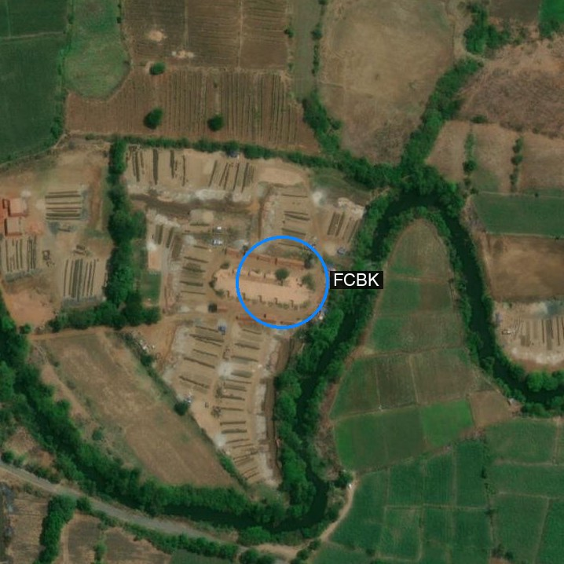
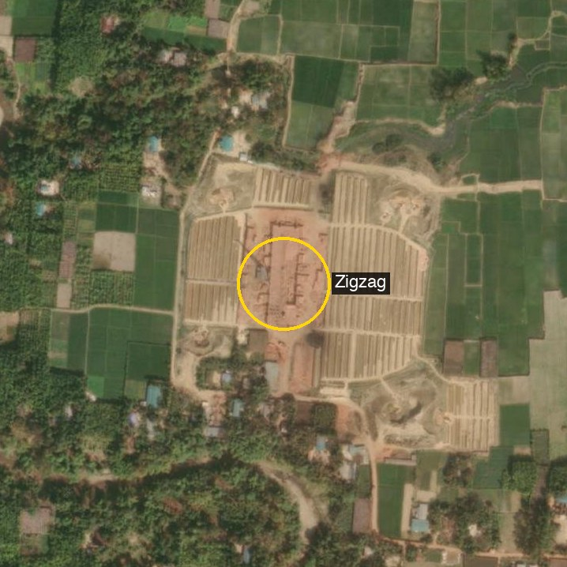
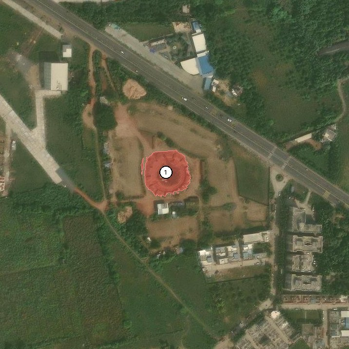

SentinelKilnDB (NeurIPS 2025 D&B) is a 114,300-tile labelled dataset of brick kilns across South Asia. Three classes:
| Class | Full name | Visual signature |
|---|---|---|
| CFCBK | Continuous Fixed-Chimney Bull’s-Trench Kiln | Circular/oval ring, central chimney |
| FCBK | Fixed-Chimney Bull’s-Trench Kiln | Rectangular, single chimney, brick stacks |
| Zigzag | Zigzag Kiln | Large rectangle, internal zigzag wall pattern |
The tiles ship as 128×128 Sentinel-2 patches at 10 m/pixel, which is great for a benchmark but too coarse for a frontier VLM to do real visual reasoning — kilns end up as 4-pixel smudges. The clever bit: every filename is {lat}_{lon}.png, so I can re-pair each labelled location with higher-resolution ESRI World Imagery at zoom 18 (~0.6 m/pixel) and run the actual PR #926 agent loop on the result.
Code lives in this post’s folder. All scripts under
posts/sentinelkilndb/scripts/:
sample_dataset.py— stream SentinelKilnDB, balance by class, save 16 tilesfetch_hires.py— convert each(lat, lon)to an ESRI tile stitch (z=17 wide + z=18 tight)eval_hires.py— Falcon Perception + Gemma 4 zero-shot, independent probesagent_loop.py— Gemma 4 inrun_agent, calling Falcon Perception as a tool
What does the loop actually look like?

ground_expression to ask Falcon Perception for masks, optionally calls compute_relations or get_crop, and finally emits answer(...) with supporting_mask_ids so the human gets a receipt.Two roles. The VLM is the orchestrator — Gemma 4 31B 4-bit running locally via mlx-vlm. The tools are deterministic callees — Falcon Perception for grounding, plus small numpy helpers for spatial relations and cropping. Gemma never does arithmetic; it asks the right tool, reads the JSON metadata back, and decides the next step.
The contract is the answer(response, supporting_mask_ids) call: the final classification comes with mask IDs that point at the pixels Gemma reasoned over. If the answer is wrong, you can open the mask. With independent probes there is nothing to open.
Higher-res in: same dataset, sharper picture
For each labelled tile, I compute the kiln’s true (lat, lon) (patch centre + GT-box offset) and stitch a 250 m × 250 m crop at z=18. That’s the same scene the dataset annotates, just at 17× the resolution. The visual difference is the entire post:


The annotations on each image (red/blue/yellow ring + class label) are ground truth from the dataset, projected onto the high-res view via the (lat, lon) and the GT box centroid.
Two ways to wire Gemma + Falcon
eval_hires.py
Two separate forward passes per image. Falcon outputs masks; Gemma outputs a class. Neither sees the other.
masks_kiln = run_ground_expression(fp_model, fp_processor, tile, "brick kiln")
gemma_class = run_baseline(tile, GEMMA_PROMPT, vlm)agent_loop.py
Gemma sees the image, decides what to ground, calls Falcon as a tool, reasons over the JSON metadata, then emits an answer(...) with mask IDs.
result = run_agent(tile, query, fp_model, fp_processor, vlm, max_steps=8)
print(result.answer)
print(result.supporting_mask_ids) # the mask IDs that backed the answerIndependent-probe results on 8 tiles
| # | True | Falcon "brick kiln" |
Falcon "circular kiln" |
Gemma class | Confidence |
|---|---|---|---|---|---|
| 00 | CFCBK | 0 | 1 | CFCBK ✓ | high |
| 01 | CFCBK | 0 | 1 | CFCBK ✓ | high |
| 02 | FCBK | 0 | 0 | Zigzag ✗ | high |
| 03 | FCBK | 0 | 0 | CFCBK ✗ | high |
| 04 | Zigzag | 0 | 0 | Zigzag ✓ | high |
| 05 | Zigzag | 0 | 0 | Zigzag ✓ | high |
| 06 | none | 0 | 0 | none ✓ | high |
| 07 | none | 0 | 0 | none ✓ | high |
Gemma overall: 6/8 = 75%. Per class: CFCBK 2/2, FCBK 0/2, Zigzag 2/2, negative 2/2. The class Gemma can’t disambiguate is FCBK — confused with CFCBK (similar oval-ish layout from above) and Zigzag (similar rectangle + brick stacks). The same 8 tiles at the original 128 px Sentinel resolution scored 31% in an earlier probe, so the resolution upgrade alone bought 44 absolute points.
Falcon Perception alone: "brick kiln" returns no detections on any of the 6 positives; "circular kiln" finds the two CFCBKs and nothing else. Falcon’s vocabulary doesn’t carry “Zigzag kiln” or “FCBK” as a recognisable concept.
Agent-loop run on the first CFCBK
I ran run_agent once with the prompt:
This is a high-resolution aerial image (~0.6 m/pixel) of a small area in India. I’m looking for a brick kiln. Specifically, the dataset SentinelKilnDB recognises three types: CFCBK (circular/oval, central chimney), FCBK (rectangular with a single chimney), and Zigzag (large rectangle, internal zigzag walls). Identify whether a brick kiln is visible, and if so, classify it.
Gemma’s <think> block (verbatim):
Looking at the image, there is a prominent circular structure in the center with a central point, which matches the description of a CFCBK …
Then the tool call:
ground_expression(expression="circular brick kiln", slot="kiln") → 1 maskThe supporting mask Falcon returned, drawn on the image:

run_agent. Falcon Perception’s mask of the kiln structure, with mask #1 cited as the supporting evidence for Gemma’s classification.Gemma’s answer:
A brick kiln is visible in the image. Based on its circular shape and central chimney, it is classified as a CFCBK.
Stats: 2 VLM calls, 1 Falcon call, 76.6 seconds on an M2 Max. Same model, same image, same resolution as the independent probe — but now the answer arrives with supporting_mask_ids=[1], an actual region of pixels Gemma reasoned over.
Improving the agent — what I tried, and what actually moved
The independent probe got FCBK 0/2 wrong. So I built a kiln-aware agent (scripts/improved_agent.py) that keeps the PR’s full SYSTEM_PROMPT (with tool schema) and adds a domain-specific user-prompt addendum:
Plan you SHOULD follow:
- Note the most plausible kiln structure.
- Ground at least one of
"circular brick kiln"/"rectangular brick kiln"/"chimney". If shape is ambiguous, ground both into separate slots so you can compare.- For each grounded mask, call
compute_relationson its id to read the bounding-box aspect ratio.- Apply the rule:
< 1.4→ CFCBK,1.4–2.5 + chimney→ FCBK,> 2.5 or visible zigzag→ Zigzag.- Combine the visual cue and the measured aspect ratio. Call
answer.
Same eight tiles. Same Falcon and Gemma. Just a different prompt. Result:
| Class | Independent probe | Improved agent | Δ |
|---|---|---|---|
| CFCBK | 2/2 | 2/2 | — |
| FCBK | 0/2 | 2/2 | +2 |
| Zigzag | 2/2 | 0/2 | −2 |
| none | 2/2 | 2/2 | — |
| Total | 6/8 (75%) | 6/8 (75%) | 0 |
Same overall accuracy, completely different distribution. The aspect-ratio rule fixed the FCBK confusion (rectangular kilns now reliably labelled FCBK) but introduced a Zigzag failure: Zigzag kilns are also rectangular, so they trigger the FCBK branch unless the agent has separately confirmed the internal zigzag pattern. My prompt asked the model to “use the visible zigzag pattern” as a Zigzag tiebreaker, but Falcon Perception cannot ground “zigzag wall pattern” as a noun phrase — it returns nothing — so Gemma has no measurement to back the claim and defaults to FCBK on aspect ratio alone.
This is exactly the kind of trade-off you only see by running the change end-to-end on real data. A follow-up that would unstick Zigzag without losing the FCBK gains:
- Fine-tune Falcon Perception (or swap the backbone) to recognise
"zigzag pattern". The dataset’s OBB annotations contain Zigzag bounding boxes — a few hundred crops are enough to teach a small detection head that “zigzag” is a real visual concept. - Add a
texture_relation(mask_id)tool. Compute the periodicity of the masked patch (FFT peak / autocorrelation) and surface it as JSON metadata. Aspect ratio alone is not enough; a Zigzag kiln is a long rectangle with periodic texture, and that periodicity is a number the agent can read. - Tile + zoom on every plausible kiln. For wide z=17 views the kiln is a small fraction of the image. The agent already has
get_crop; re-runningground_expressionon each crop catches kilns the global pass missed. - Voting over scales. Run the loop independently at z=17, z=18, z=19 and majority-vote — no model change, just an outer loop.
- Replace the perception backbone for this domain. The honest fix. Falcon Perception was trained on natural images; it neither knows nor cares about brick kilns. A small fine-tuned head on SentinelKilnDB’s labels would unblock all of the above. The agent loop survives intact — only the
ground_expressioncallee swaps.
The encouraging part is that all of these are mechanical changes to a small set of files; the orchestration loop itself is fine.
Where this needs to go: segmentation, OD, and explained predictions
For real downstream use (air-quality regulation, emissions accounting, longitudinal monitoring), three capabilities have to come together:
- Pixel-accurate segmentation of each kiln, not just a presence flag. Required for area / capacity estimation and for distinguishing two adjacent kilns from one large structure.
- Object detection with class labels (oriented bounding boxes). The dataset already provides DOTA / YOLO-OBB labels; the right tool is a fine-tuned OBB detector keyed to SentinelKilnDB’s three classes, callable from inside the agent loop in place of (or alongside) Falcon Perception.
- Explained predictions. “This region is a Zigzag kiln because the chimney/footprint ratio is X, the internal zigzag pattern has period Y, the surrounding brick-curing yards span Z m².” The PR #926 agent already produces
supporting_mask_ids; what is missing is a structured justification alongside that — a few sentences citing the measurements that drove the call. That is a system-prompt change plus a smallexplanationfield on theanswer(...)schema.
Together those three close the loop from “the model thinks there’s a kiln here” to “the model thinks there’s a Zigzag kiln of approximately 12,000 m² capacity here, classified by the following measurements, with the following uncertainty.” That is the form a regulator can act on.
Files in this post’s folder
posts/sentinelkilndb/
├── agent_flow.svg
├── scripts/
│ ├── sample_dataset.py
│ ├── fetch_hires.py
│ ├── eval_hires.py # independent probes
│ ├── agent_loop.py # one-shot run_agent demo
│ └── improved_agent.py # kiln-aware system prompt + aspect-ratio rule
├── hires/ # ESRI z=17 wide + z=18 tight + manifest.json
└── results/ # Falcon overlays + agent-loop trace + JSONLinks
- Dataset:
SustainabilityLabIITGN/SentinelKilnDB· paper (NeurIPS 2025 D&B) - ESRI tile service:
World_Imagery/MapServer - Agent code: Blaizzy/mlx-vlm#926 —
agents/grounded_reasoning/ - Companion: Grounded Visual Reasoning on a Mac